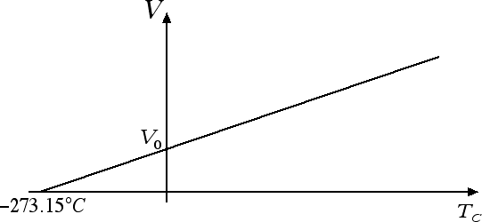
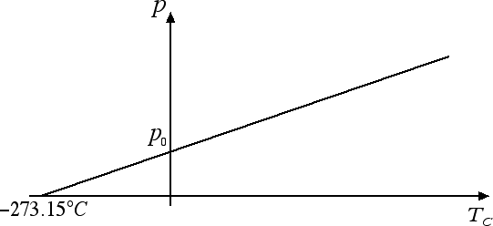

Gas ideali
Leggi di Gay-Lussac
Consideriamo una trasformazione che coinvolge un gas ideale a pressione costante. In questo caso il volume V e la temperatura TC, misurata in gradi Celsius, sono legati tra loro dalla relazione: V = V0 (1 + α · TC) dove V0 è il volume occupato dal gas a 0 °C. Il coefficiente α = 1 / 273.15 °C-1 è lo stesso per tutti i gas ed è maggiore rispetto ai coefficienti di dilatazione di solidi e liquidi. Questo ci dice che, a parità di incremento di temperatura, i gas si dilatano di più rispetto ai solidi e ai liquidi.

Questa legge prende il nome di legge di Gay-Lussac. Dal grafico riportato nella figura sopra scopriamo che il volume di un gas diventa zero alla temperatura TC = -273.15 °C, ossia allo zero assoluto. Questo è un altro modo per convincersi dell'impossibilità di andare al di sotto dello zero assoluto. Se potessimo andare al di sotto dello zero assoluto ci ritroveremmo con dei volumi negativi! La legge di Gay-Lussac assume una forma semplificata se la riscriviamo in termini della temperatura in gradi Kelvin T = TC + 273.15. Infatti V = V0 · (1 + TC / 273.15) può essere riscritta come V = V0 · (273.15 + TC) / 273.15, ossia V = V0 · T / T0 dove T0 = 273.15 K è la temperatura alla quale il volume del gas è uguale a V0. In altre parole, il volume e la temperatura assoluta di un gas ideale sono direttamente proporzionali.
Esiste anche un'altra legge dovuta a Gay-Lussac: essa descrive il comportamento di un gas a volume costante ed è esattamente analoga alla precedente, ossia la pressione p e la temperatura in gradi Celsius TC sono legate tra loro dalla relazione: p = p0 (1 + α · TC) dove p0 è la pressione del gas a 0 °C. La costante α = 1 / 273.15 °C-1 anche in questo caso.

Anche in questo caso la pressione diventa uguale a 0 a -273.15 °C e la legge può essere riscritta in termini della temperatura in gradi Kelvin T come p = p0 · T / T0, ossia a volume costante abbiamo che la pressione e la temperatura assoluta di un gas ideale sono direttamente proporzionali.